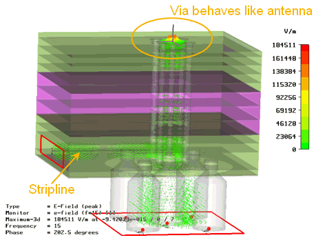
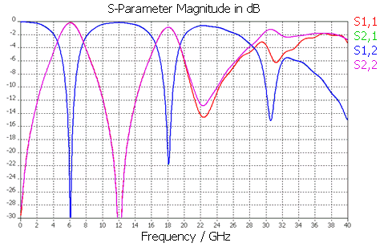

Importance of via stub removal
The removing of pogo and signal via stubs, the so-called backdrilling, is an important step in the design and manufacturing of high-speed DUT boards.
Although it will increase costs, the removal of via stubs is a must at multi-gigabit data rates. The 3D EM simulation below shows a pogo via with a significant stub. The via stub behaves like an antenna.

The graphic below shows the simulated S-parameters for above example. It shows the limited bandwidth and the existence of several resonances.

Functional changes
- Introduced before SmarTest 6.3.2